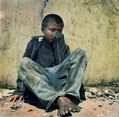

Amerigo,a Street Child
My neme is Amerigo. I am 13 years old and I live on the Street, alonge. My mother, who is separated from my father,doesn't want me.
She told me to go away.....Now she is married to another man. My father lives very far away.
I want to go to him, but he won't take me either. I begged him to send me some money so that I could buy a bus tickt.
I am still waiting.He hasn't answered.
The streets are now my home. Sometimes I find work. I used to collect trash and sell it to vendor.I stopped doing that after I had a serious infection a doctor told me to stay away form the trash dumo. Once I worked an ice cream shop owner and sold ice cream on the beach.
But I got no money in return. The owner of the shop gave me something to eat and let me sleep in his hut at night. The work was difficult and painful.
The ice cream box is quite heavy when it is full. I had to walk for hours, offering my ice cream to whoever wanted to buy. There were days when I could not even sell one ice cream.

In a way,I am lucky because I am alive. My frieds who work sorting rubbish in dumps often suffer from serious diseases.One of them was recently killed after he fell into a hole that opened up in the pile of tarsh.
Many of us work for 10 to 12 hours, and get so little in return that we can't even buy food.
Shoe-shining is very populer among the street kids.A few of my friends also work in factoris and workshops. A boy I know lost one of his eyes after a piece of hot glass flew into his eye at the glass factory where he worked. The owner refused to pay for medical help and fired him.
For me, like all other children on the street, it is very hard. I am always hungry, and I don't know where I will sleep the next night, I would like to live in my own home and sleep there in peace. The night are very cold in the winter. You can die of cold in the street.